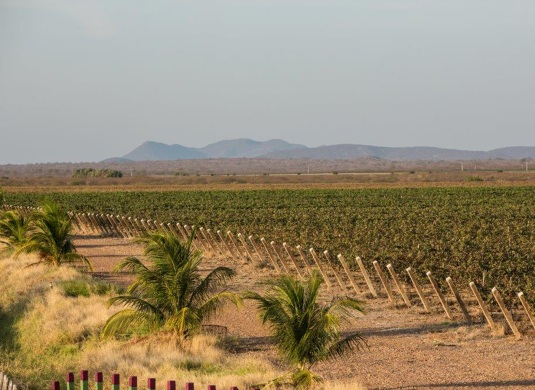

Sobre a 18K Wine
Do Vale do São Francisco para o mundo — vinhos tropicais com qualidade universal
Uma história de paixão e inovação
A 18K Wine foi fundada há mais de 8 anos com a missão de criar produtos excepcionais de uva e vinho.
Começamos no universo Kosher, onde nos tornamos uma das maiores empresas do Brasil na produção de vinhos e sucos certificados. Nosso compromisso com a qualidade, clientes e parceiros de varejo nos impulsionou a crescer continuamente.
Hoje, expandimos nossa visão: continuamos orgulhosos da certificação Kosher, mas nossa proposta é acessível a todos os amantes de vinho. Oferecemos vinhos e sucos de alta qualidade, produzidos com uvas selecionadas do terroir único do Nordeste brasileiro.

O Vale do São Francisco
Nossos vinhos e sucos são produzidos no Vale do São Francisco, no Nordeste do Brasil — uma região com clima tropical privilegiado que permite duas safras por ano.
O terroir local oferece designação de origem "Vinhos Tropicais", reconhecida pela singularidade dos sabores que só essa região pode produzir. Uvas de alta qualidade, sol abundante e um microclima único resultam em produtos com notas frutadas, aromas marcantes e identidade própria.
- Terroir tropical único
- Duas safras anuais
- Designação de origem "Vinhos Tropicais"
- Qualidade natural e sabores vibrantes

Nordeste do Brasil — Vale do São FranciscoGaleria de Branding
Imagens do relatório de identidade da marca
Além do Kosher: qualidade para todos
Mantemos rigorosamente nossa certificação Kosher, com supervisão rabínica de parceiros especializados. Mas nosso foco agora é mais amplo: queremos que qualquer entusiasta de vinho descubra o sabor único dos vinhos tropicais brasileiros.
Nossos produtos são saborosos, saudáveis e naturais — qualidades que transcendem segmentos. Do suco de uva integral ao vinho branco aromático, cada item reflete nossa dedicação à excelência e ao terroir nordestino.